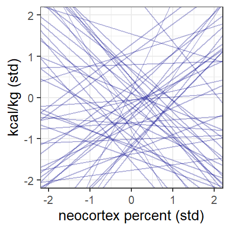
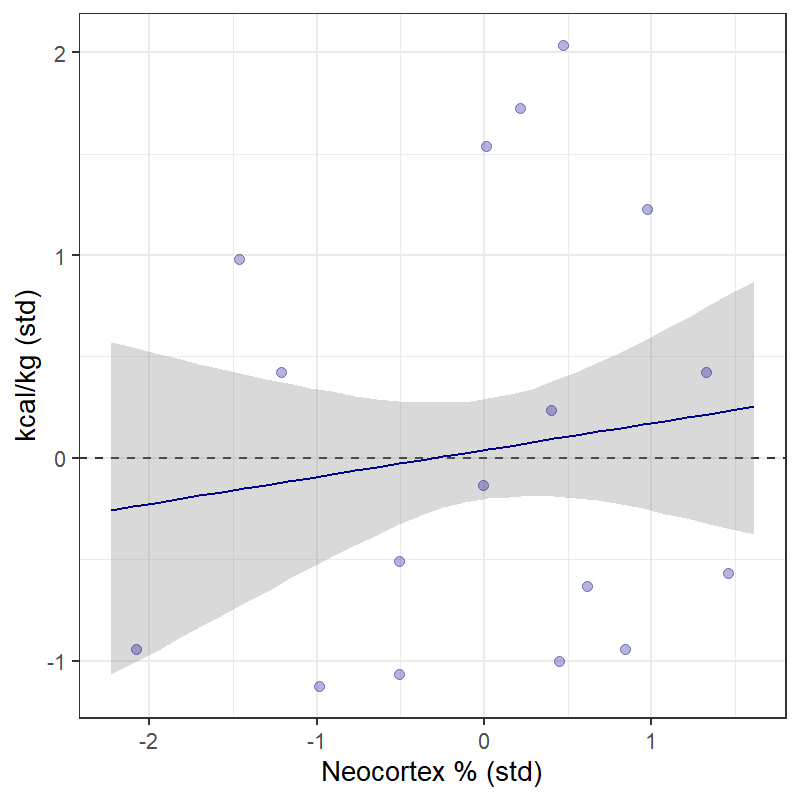
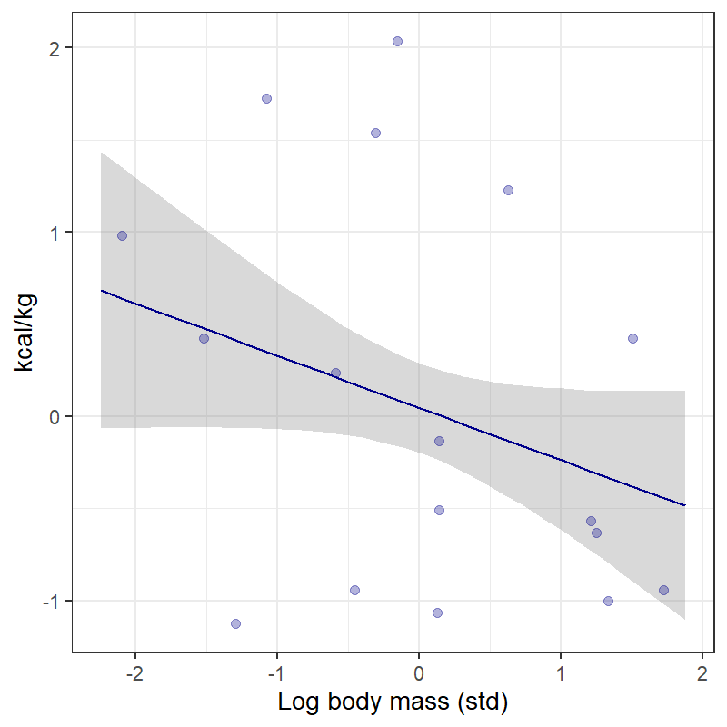
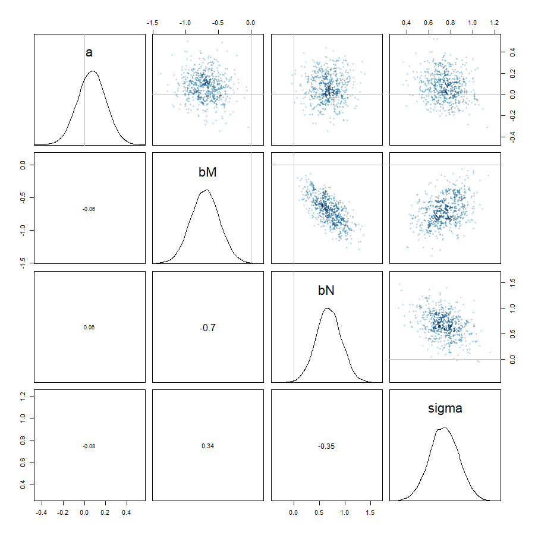
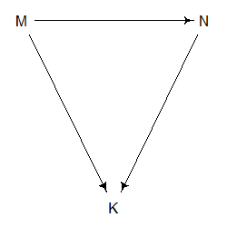
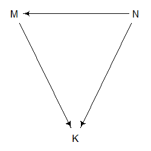
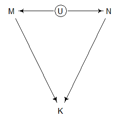
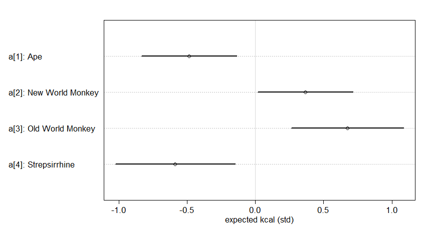
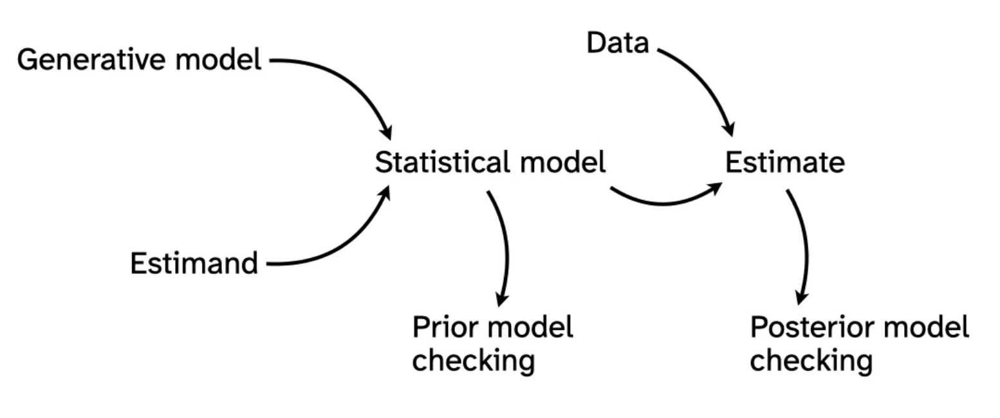
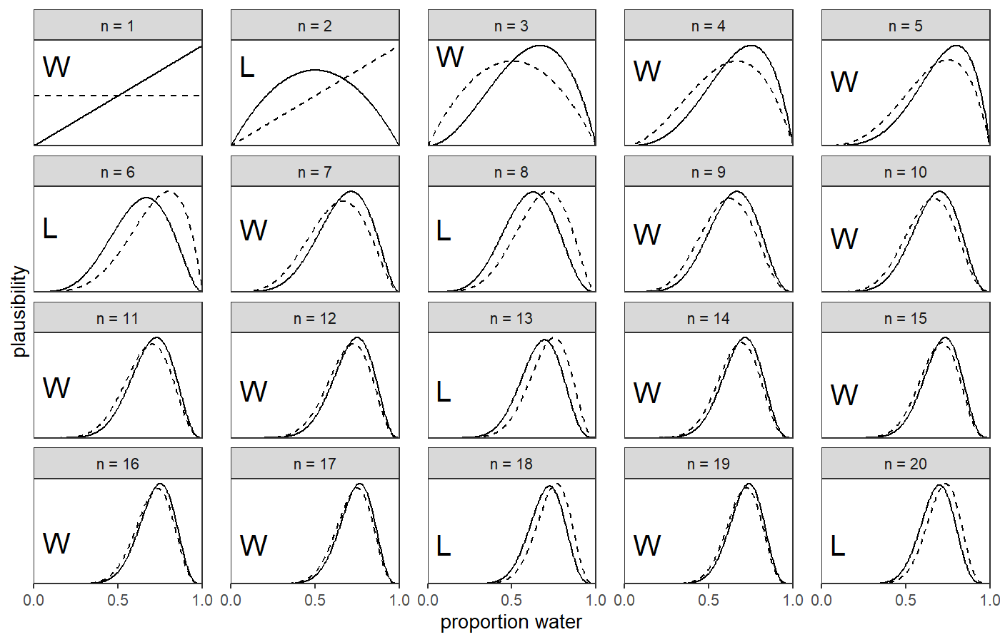

Many Variables (Part 2)
EES 4891-06/5891-01
Bayesian Statistical Methods
Jonathan Magnolia Gilligan
Class #7: Wednesday February 4, 2026
Masked Relationships
Primate Milk Data
- Data from K. Hinde & L.A. Milligan, “Primate milk: Proximate
mechanisms and ultimate perspectives,” Evolutionary
Anthropology 20, 9–23 (2011). doi: 10.1002/evan.20289
- Goal: How have evolutionary forces shaped lactation in different primate species.
- Data:
- 29 species, belonging to 4 clades.
- For each species:
- Body characteristics:
- Mean maternal body mass (kg)
- Fraction of total brain mass consisting of neocortex tissue
- Milk characteristics:
- Energy density (kilocalories/kilogram)
- Percent of milk energy from fat, protein, and lactose
- Body characteristics:
## Rows: 29
## Columns: 8
## $ clade <fct> Strepsirrhine, Strepsirrhine, Strepsirrh…
## $ species <fct> Eulemur fulvus, E macaco, E mongoz, E ru…
## $ kcal.per.g <dbl> 0.49, 0.51, 0.46, 0.48, 0.60, 0.47, 0.56…
## $ perc.fat <dbl> 16.60, 19.27, 14.11, 14.91, 27.28, 21.22…
## $ perc.protein <dbl> 15.42, 16.91, 16.85, 13.18, 19.50, 23.58…
## $ perc.lactose <dbl> 67.98, 63.82, 69.04, 71.91, 53.22, 55.20…
## $ mass <dbl> 1.95, 2.09, 2.51, 1.62, 2.19, 5.25, 5.37…
## $ neocortex.perc <dbl> 55.16, NA, NA, NA, NA, 64.54, 64.54, 67.…## mean sd 5.5% 94.5%
## kcal.per.g 0.6417241 0.1614016 0.4654 0.9146
## perc.fat 33.9903448 14.2866705 14.5420 53.8240
## perc.protein 16.4034483 4.8468777 9.7020 23.5152
## perc.lactose 49.6062069 14.0551735 30.6934 71.1150
## mass 14.7268966 24.7704693 0.4010 66.2108
## neocortex.perc 67.5758824 5.9686117 58.4072 75.5872
## histogram
## kcal.per.g ▇▅▂▁▁▅▂▁▁▂▁
## perc.fat ▁▁▂▃▂▅▂▇▂▂▇▁
## perc.protein ▁▂▂▇▃▃▂▃▃▁
## perc.lactose ▁▇▃▃▃▅▂▂▃▃
## mass ▇▁▁▁▁▁▁▁▁▁
## neocortex.perc ▂▁▂▅▁▅▅▅▇▅▂▂Masked Relationships
- Goal: How have evolutionary forces shaped primate lactation?
- What we know:
- Brains have high metabolic demands
- Infants with large brains need more calories
- Hypothesis:
- Species with large brains will produce higher-calorie milk
- Standardize data
- Note: we standardize the log of mass.
- Clean data
- complete-case analysis: Remove rows with missing values
Simple Regression
Model \[ \begin{align} K &\sim \text{Normal}(\mu, \sigma) \\ \mu &= \alpha + \beta_N N \\ \alpha &\sim \text{Normal}(0, 1) \\ \beta_N &\sim \text{Normal}(0, 1) \\ \sigma &\sim \text{Exponential}(1) \\ \end{align} \]
-
Plot prior predictive distributions for variables.
- Prior predictions look absurd.
Choose better priors: \[ \begin{align} \alpha &\sim \text{Normal}(0, 0.2) \\ \beta_N &\sim \text{Normal}(0, 0.5) \\ \end{align} \]


Test Model with Simulated Data
- Can our model estimate parameters accurately?
- Test it with simulated data:
- Pick parameters \(\alpha\), \(\beta_N\), \(\sigma\) at random from the priors
- Generate simulated data with those parameters
- Use the model to estimate \(\alpha\), \(\beta_N\), and \(\sigma\) from the simulate data.
- Compare the posterior distributions of \(\alpha\), \(\beta_N\), and \(\sigma\) from the model to the actual values sampled in step 1.
- All three parameters lie within the 89% highest-density
interval of the posterior
- Success!
Examine Model
-
Now, apply model to estimate \(\alpha\), \(\beta_N\), and \(\sigma\) for the actual data.
-
Examine the posterior estimate from the model:
## mean sd 5.5% 94.5% ## a 0.04 0.15 -0.21 0.29 ## bN 0.13 0.22 -0.22 0.49 ## sigma 1.00 0.16 0.74 1.26 Both a and bN are consistent with zero. There isn’t a strong relationship between N and K.

Try A Different Model
Model \[ \begin{align} K &\sim \text{Normal}(\mu, \sigma) \\ \mu &= \alpha + \beta_M M \\ \alpha &\sim \text{Normal}(0, 1) \\ \beta_M &\sim \text{Normal}(0, 1) \\ \sigma &\sim \text{Exponential}(1) \\ \end{align} \]
-
Examine the posterior:
## mean sd 5.5% 94.5% ## a 0.05 0.15 -0.20 0.29 ## bM -0.28 0.19 -0.59 0.03 ## sigma 0.95 0.16 0.70 1.20 Again, a and bM are consistent with zero.

Consider Both M and N
- Model \[ \begin{align} K &\sim \text{Normal}(\mu, \sigma) \\ \mu &= \alpha + \beta_M M + \beta_N N \\ \alpha &\sim \text{Normal}(0, 1) \\ \beta_M &\sim \text{Normal}(0, 1) \\ \beta_N &\sim \text{Normal}(0, 1) \\ \sigma &\sim \text{Exponential}(1) \\ \end{align} \]
Compare Models using Counterfactuals
Multiple Regression Model
- Model \[ \begin{align} K &\sim \text{Normal}(\mu, \sigma) \\ \mu &= \alpha + \beta_M M + \beta_N N \\ \alpha &\sim \text{Normal}(0, 1) \\ \beta_M &\sim \text{Normal}(0, 1) \\ \beta_N &\sim \text{Normal}(0, 1) \\ \sigma &\sim \text{Exponential}(1) \\ \end{align} \]

Interpreting Result
- No relationship between \(K\) and either \(M\) or \(N\), if we ignore the relationship between \(M\) and \(N\)
- Pairs plot shows relationships among K, M, and N
- M and N are strongly correlated
- Possible interpretations:
- Species with high neocortex percent, relative to their body mass, have higher milk energy
- Species with high body mass, relative to their neocortex percent, have higher milk energy
Examining the Posterior

Causal Possibilities
-
Model results:
- Bigger species (e.g., apes) tend to have lower-energy milk
- Species with greater fraction of neocortex tend to have higher-calorie milk
- But there’s a relationship between body mass and neocortex percent
-
There are 3 possible DAGs

- Larger body mass causes greater neocortex percent
- Greater neocortex percent causes great body mass
- M and N are both determined by a third (latent) variable U that
we didn’t observe
- More on latent variables in Ch. 6.
- Figuring out the right diagram is hard.
- All three have the same conditional independencies.
- Data alone won’t solve this.
- Our scientific knowledge can rule out absurd possibilities.
Categorical Variables
Categorical Variables
- Categories:
- Discrete variables, describing a group that an individual falls into
- Unordered:
- Species: turtles, lizards, crocodiles, …
- Sex: male, female
- Rock: granite, diorite, basalt, …
- Ordered:
- Developmental status: infant, juvenile, adult
- Geologgic period: Permian, Triassic, Jurassic, Cretacious, …
- Educational attainment: less than high-school, high school grad, some college, college grad, postgrad degree
Milk Data
## Rows: 29
## Columns: 11
## $ clade <fct> Strepsirrhine, Strepsirrhine, Strepsirrh…
## $ species <fct> Eulemur fulvus, E macaco, E mongoz, E ru…
## $ kcal.per.g <dbl> 0.49, 0.51, 0.46, 0.48, 0.60, 0.47, 0.56…
## $ perc.fat <dbl> 16.60, 19.27, 14.11, 14.91, 27.28, 21.22…
## $ perc.protein <dbl> 15.42, 16.91, 16.85, 13.18, 19.50, 23.58…
## $ perc.lactose <dbl> 67.98, 63.82, 69.04, 71.91, 53.22, 55.20…
## $ mass <dbl> 1.95, 2.09, 2.51, 1.62, 2.19, 5.25, 5.37…
## $ neocortex.perc <dbl> 55.16, NA, NA, NA, NA, 64.54, 64.54, 67.…
## $ K <dbl> -0.9400408, -0.8161263, -1.1259125, -1.0…
## $ N <dbl> -2.08019603, NA, NA, NA, NA, -0.50864129…
## $ M <dbl> -0.4558357, -0.4150024, -0.3071581, -0.5…##
## Ape New World Monkey Old World Monkey
## 9 9 6
## Strepsirrhine
## 5- Consider how the average milk energy varies by clade.
-
Model:
\[ \begin{align} K &\sim \text{Normal}(\mu_i, \sigma) \\ \mu_i &= \alpha_{\text{Clade}[i]} \\ \alpha_j &\sim \text{Normal}(0, 0.5)~\text{for } j = 1 \ldots 4 \\ \sigma &\sim \text{Exponential}(1) \end{align} \]
Results
-
Model:
\[ \begin{align} K &\sim \text{Normal}(\mu_i, \sigma) \\ \mu_i &= \alpha_{\text{Clade}[i]} \\ \alpha_j &\sim \text{Normal}(0, 0.5)~\text{for } j = 1 \ldots 4 \\ \sigma &\sim \text{Exponential}(1) \end{align} \]
## mean sd 5.5% 94.5%
## a[1] -0.48 0.218 -0.832 -0.14
## a[2] 0.37 0.217 0.019 0.71
## a[3] 0.68 0.258 0.264 1.09
## a[4] -0.59 0.275 -1.025 -0.15
## sigma 0.72 0.097 0.565 0.87labels <- str_c("a[", 1:4, "]: ", levels(d$clade))
plot(precis(mdl_clade, depth = 2, pars = "a"),
labels = labels, xlab = "expected kcal (std)")
Review
Bayesian Workflow

Generative Models
-
Consider the model
\[ \begin{align} K &\sim \text{Normal}(\mu, \sigma) \\ \mu &= \alpha + \beta_M M + \beta_N N \\ \alpha &\sim \text{Normal}(0, 1) \\ \beta_M &\sim \text{Normal}(0, 1) \\ \beta_N &\sim \text{Normal}(0, 1) \\ \sigma &\sim \text{Exponential}(1) \\ \end{align} \]
-
The generative part is in the first two lines:
\[ \begin{align} K &\sim \text{Normal}(\mu, \sigma) \\ \mu &= \alpha + \beta_M M + \beta_N N \\ \end{align} \]
- Our observations of \(K\) are drawn from a random distribution with mean \(\mu\) and standard deviation \(\sigma\).
-
- \(\mu\) is a linear function of \(M\) and \(N\).
- There are four unknown parameters that describe the details of this generative process: \(\alpha\), \(\beta_M\), \(\beta_N\), and \(\sigma\).
- Where does the randomness come from in the first line of the
model?
- Why are our observations of \(K\) randomly distributed?
- Sampling: milk properties vary from individual to individual and
may vary over time.
- What we measure depends on which individual we choose and when we measure its milk
- Our laboratory assay has uncertainty.
- We may make errors in collecting amd storing the milk or in performing the assay
Estimands
-
Generative Model
\[ \begin{align} K &\sim \text{Normal}(\mu, \sigma) \\ \mu &= \alpha + \beta_M M + \beta_N N \\ \end{align} \]
-
We want to estimate the unknown parameters \(\alpha\), \(\beta_M\), \(\beta_N\), and \(\sigma\).
- These are our estimands.
- We use these estimands to answer research questions, such as whether either \(\beta_M\) or \(\beta_N\) is nonzero.
- These are our estimands.
Statistical Model
-
We start with our generative model
\[ \begin{align} K &\sim \text{Normal}(\mu, \sigma) \\ \mu &= \alpha + \beta_M M + \beta_N N \\ \end{align} \]
and our estimands \(\alpha\), \(\beta_M\), \(\beta_N\), and \(\sigma\).
We want to use a statistical model to estimate our estimands.
-
In Bayesian statistics, our statistical model combines:
-
Our generative model,
\[ \begin{align} K &\sim \text{Normal}(\mu, \sigma) \\ \mu &= \alpha + \beta_M M + \beta_N N \\ \end{align} \]
Prior estimates for our estimands,
\[ \begin{align} \alpha &\sim \text{Normal}(0, 1) \\ \beta_M &\sim \text{Normal}(0, 1) \\ \beta_N &\sim \text{Normal}(0, 1) \\ \sigma &\sim \text{Exponential}(1) \\ \end{align} \]
- and data
to generate a posterior estimate of the estimands.
-
Choosing Priors
- Choosing priors can be tricky
- Sometimes you know your priors from previous research.
- You already have estimates of your estimands from your literature review, and you’re trying to improve the accuracy of those estimates by collecting more data.
- Other times, theory can guide you.
- Mass cannot be negative
- The slope of a sand pile can’t exceed a critical value or it will collapse
-
Uninformative Priors: You know almost nothing about
the estimand
- Globe tossing: You don’t know anything about the fraction of earth
covered by water.
- Uniform prior: all values from 0 to 1 are equally likely.
- The posterior is almost entirely determined by the data
- Globe tossing: You don’t know anything about the fraction of earth
covered by water.
- Weakly-informative prior: You know something
about the estimand but have a lot of uncertainty
- The intercept for predicting height from weight is somewhere around 178 cm, but it could be anywhere from 138 to 218.
- The posterior is a balance between the prior and the data
- Strongly-informative prior: You are very
confident about the estimand, and can confidently rule out many
possibilities, but you stil want to improve the precision of your
estimate.
- People have been measuring the speed of light for more than 100 years, but you want to make it even more accurate.
- The posterior is mostly determined by the prior, and new data only changes it a little.
Prior Predictive Tests
- You often know more than you think.
- Certain values of the estimand are just not believable.
- Your priors should rule these out
- Certain values of the estimand are just not believable.
- Prior predictive checks can help you find weakly-informative priors that rule out absurd values, without unduly constraining your analysis.
- Strongly-informative priors can be a problem if they
are overconfident.
- They can prevent your data from contributing to an improved posterior estimate.
- In most cases, weakly-informative priors are the best choice, and using prior predictive checks can help guide you to a sweet spot between too informative and not informative enough
Applying Statistical Models
- After you have:
- Developed your generative model
- Chosen your estimands
- Chosen your priors
- It’s time to apply your statistical model to your data to create a posterior probability distribution for your estimand
- After you apply your statistical model, you perform various posterior tests of the model to help determine how well you trust the results of your analysis.
Bayesian Analysis and Scientific Method
- Science proceeds iteratively:
- Each experiment or observation adds to the knowledge we already have.
- Bayesian statistical methods embody this
- Previous knowledge determines your priors
- New data from experiments or observations lets you create a posterior estimate that improves your knowledge of the estimand from what you knew before.
- When you get new data, the old posterior becomes the prior for your next analysis
Globe Tossing
Sampling
- You have a globe and want to figure out what fraction of the earth’s surface is water.
- Toss the globe in the air, catch it, and note whether your index finger is on water or land: outcomes are W and L.
- At every toss, use Bayes’s theorem to update your estimate of the fraction that is water.

Iteratively Improving Estimates of Water Coverage
